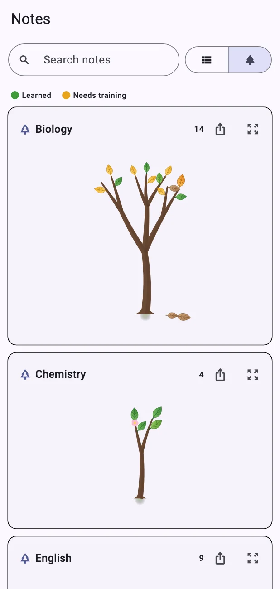
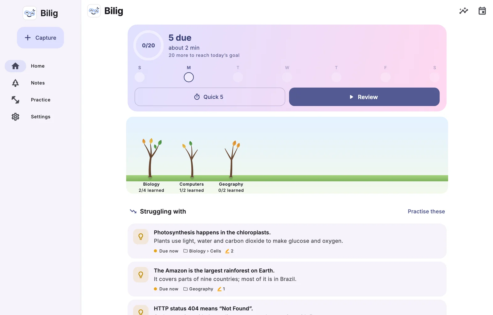
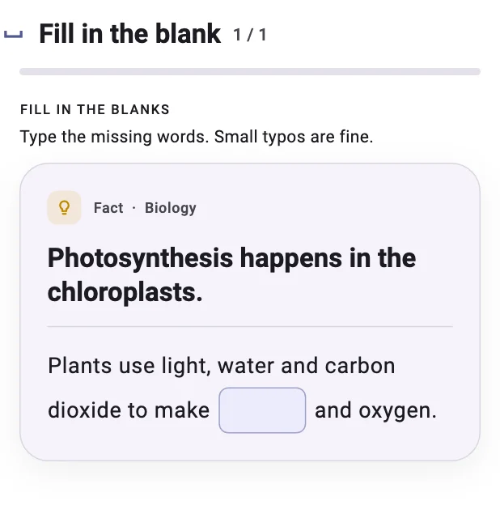
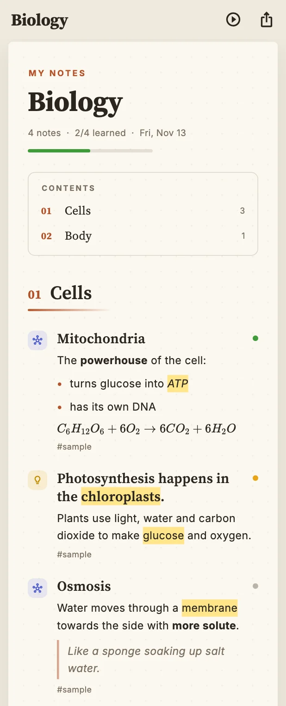
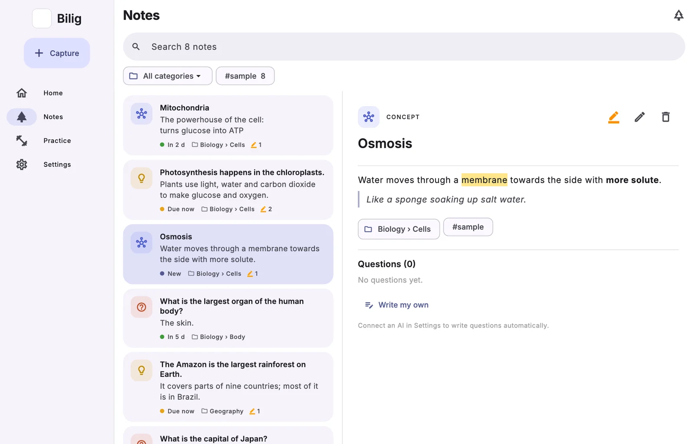

Progress you can see
Every subject grows into a tree.
Each category is a tree and each note a leaf. Leaves turn green as you learn them and yellow when they need a review — one look tells you where you stand.

Free · Windows · Mac · Linux · Android
Write down what you learn. Bilig turns each note into questions and asks them right before you'd forget — so what you study actually stays.
No account needed. Your notes stay on your device.


Type it, say it, snap a photo of a page, or paste a whole lecture and let it split into notes.
Flashcards, multiple choice, fill-in-the-blank, typed answers — made from your own words.
Each note comes back just before you'd forget it. Five minutes a day keeps everything fresh.
Progress you can see
Each category is a tree and each note a leaf. Leaves turn green as you learn them and yellow when they need a review — one look tells you where you stand.

Note paper
Before an exam, open a category as a page: contents, numbered sections, your highlights and formulas, set like a book. Export it as Markdown in one tap.

AI writes real questions from your notes — and Bilig still works fully without it.
Bold, lists, code blocks with colours, and LaTeX formulas like x² + y² = z².
Easy on the eyes at midnight before the exam, too.
Import Anki decks, Markdown and text files — or drop them onto the window.
O‘zbekcha, Русский and English — the app and its questions.
Notes live on your device and work without internet. Back them up whenever you like.

On a laptop, notes and the open note sit side by side. ⌘N / Ctrl+N for a new note, ⌘F to search.
Free. Pick your device.
iOS 15+
App Store — soonsudo apt install ./Bilig-Linux-amd64.deb, then find Bilig in your apps.Yes. Everything you see here is free to use.
No. Bilig works offline and keeps your notes on your device. The internet is only used for the optional AI features.
AI can write questions, read photos of pages and split long texts into notes. Today it uses a free key from Google Gemini or Groq that you paste in Settings once; without it, Bilig makes questions itself.
Save a backup file on one device and open it on another. Bilig can also import Anki decks and Markdown files.
A study method backed by decades of research: you review each fact just as you're about to forget it, so the gaps between reviews grow and it moves into long-term memory.